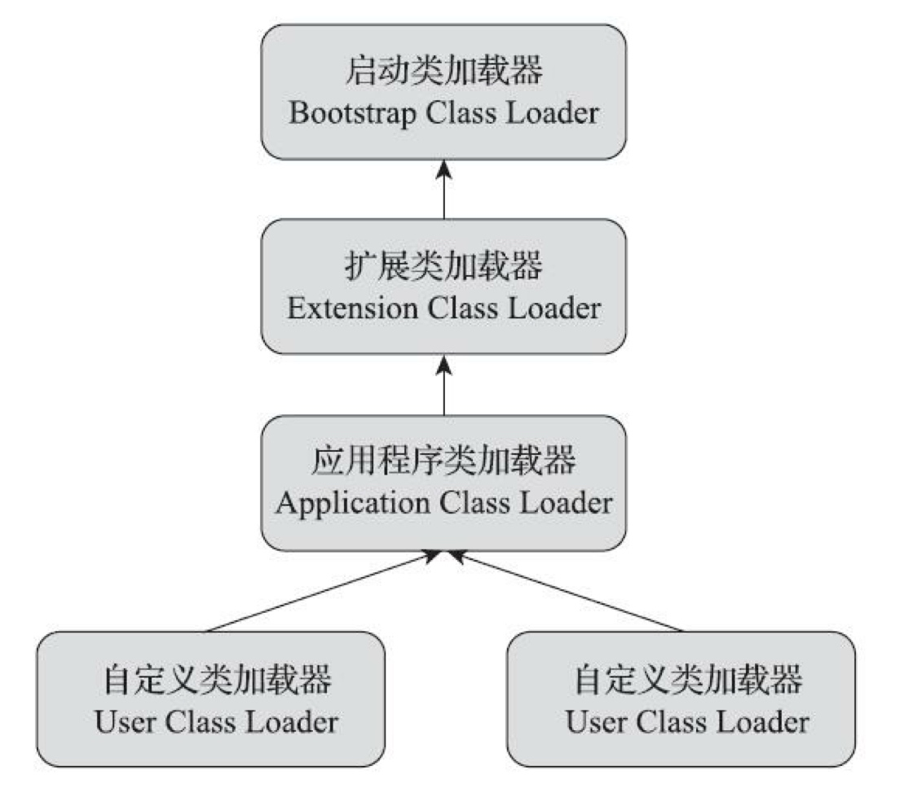

1、类的生命周期
从类被加载到虚拟机内存中开始，到卸载出内存为止，类的生命周期包括加载(Loading)、验证(Verification)、准备(Preparation)、解析(Resolution)、初始化(Initialization)、使用(Using)和卸载(Unloading)7个阶段，其中验证、准备和解析三部分称为连接。类的加载、连接、初始化过程都是在程序运行期间进行的
在如下几种情况下，Java虚拟机将结束生命周期
– 执行了System.exit()方法
– 程序正常执行结束
– 程序在执行过程中遇到了异常或错误而异常终止
– 由于操作系统出现错误而导致Java虚拟机进程终止
JVM 类加载机制分为五个部分

虚拟机把描述类的数据从Class文件加载到内存， 并对数据进行校验、转换解析和初始化， 最终形成可以被虚拟机直接使用的Java类型， 这就是虚拟机的类加载机制。
1.1、加载
在内存中生成一个代表这个类的java.lang.Class对象，作为方法去这个类的各种数据的入口。
此阶段完成三件事。
- 通过一个类的全限定名来获取定义此类的二进制字节流(可以来自zip、war等压缩包，网络，动态生成，数据库等)。
- 将这个字节流所代表的静态存储结构转化为方法区的运行时数据结构
- 在内存中生成一个代表这个类的java.lang.Class对象，作为方法区这个类的各种数据的访问入口。
加载阶段既可以使用Java虚拟机里内置的引导类加载器来完成，也可以由用户自定义的类加载器去完成。
对于数组类而言，情况就有所不同，数组类本身不通过类加载器创建，它是由Java虚拟机直接在 内存中动态构造出来的。但是数组的元素类型还是需要通过类加载器来完成加载。
- 如果数组的组件类型是引用类型，那就递归采用本节中定义的加载过程去加载这个组件类型，数组C将被标 识在加载该组件类型的类加载器的类名称空间上(一个类型必须与类加 载器一起确定唯一性)
- 如果数组的组件类型不是引用类型(例如int[]数组的组件类型为int)，Java虚拟机将会把数组C标记为与引导类加载器关联。
- 数组类的可访问性与它的组件类型的可访问性一致，如果组件类型不是引用类型，它的数组类的可访问性将默认为public，可被所有的类和接口访问到。
1.2、验证
确保Class文件的字节流中包含的信息是否符合当前虚拟机要求.
1.3、准备
准备阶段是正式为类中定义的变量(即静态变量，被static修饰的变量)分配内存并设置类变量初始值的阶段。
注意 ： 关于准备阶段，还有两个容易产生混淆的概念需要着重强调，首先是这时候进行内存分配的 仅包括类变量，而不包括实例变量，实例变量将会在对象实例化时随着对象一起分配在Java堆中。其次是这里所说的初始值“通常情况”下是数据类型的零值，
###1.4、 解析
虚拟机将常量池中的符号引用替换为直接引用的过程
- 符号引用
符号引用以一组符号来描述所引用的目标，符号可以是任何形式的字面量，只要使用时能无歧义地定位到目标即可，符号引用与虚拟机实现的布局无关，引用的目标并不一定要已经加载到内存中。
各种虚拟机实现的内存布局可以各不相同，但是他们能接受的符号引用必须是一致的，因为符号引用的字面量形式明确定义在java虚拟机规范的Class文件格式中
- 直接引用：可以是执行目标的指针，相对偏移量或是一个能间接定位到目标的句柄。如果有了直接引用，那么引用的目标必定已经存在于内存中。
解析动作主要针对类或接口、字段、类方法、接口方法、方法类型、方法句柄和调用点限定符这7 类符号引用进行，分别对应于常量池的CONSTANT_Class_info、CON-STANT_Fieldref_info、CONSTANT_Methodref_info、CONSTANT_InterfaceMethodref_info、CONSTANT_MethodType_info、CONSTANT_MethodHandle_info、CONSTANT_Dyna-mic_info和CONSTANT_InvokeDynamic_info 8种常量类型。
###1.5、 初始化
初始化是指执行静态代码块，静态变量的初始化操作，它是类加载阶段的最后一个阶段，前面的类加载阶段之后，除了在加载阶段可以自定义类加载器以外，其它操作都有jvm主导，到了初始化阶段，才开始真正执行类中定义的java程序代码。
初始化阶段是执行类构造器方法的过程。方法是由编译器自动收集类中的类变 量的赋值操作和静态语句块中的语句合并而成的。虚拟机会保证子方法执行之前，父类 的方法已经执行完毕
有且只有以下六种对类型进行主动引用的情况需要立即对类进行初始化：
-
遇到new、getstatic、putstatic或invokestatic这四条字节码指令时，如果类型没有进行过初始化，则需要先出法器初始化阶段。
- 使用new关键字实例化对象的时候
- 读取或设置一个类型的静态字段(被final修饰、已在编译器把结果放入常量池的静态字段除外)的时候
- 调用一个类型的静态方法的时候
-
使用java.lang.reflect包的方法对类型进行反射调用的时候，如果类型没有进行过初始化，则需要先触发器初始化。
-
当初始化类的时候，如果发现其父类没有进行过初始化，则需要先触发其父类的初始化。
-
当虚拟机启动时，用户需要制定一个要执行的主类(包含main()方法的哪个类)，虚拟机会先初始化这个主类
-
当使用 jdk7 新加入的动态语言支持时，如果一个 java.lang.invoke.MethodHandle 实例最后的解析结果为 REF_getStatic、REF_p utStatic、REF_invokeStatic、REF_newInvokeSpecial四种类型的方法句柄，并且这个方法句柄对应的类没有进行过初始化，需要先触发其初始化
-
当一个接口中定义了jdk8新加入的默认方法(被default关键字修饰的接口方法)时，如果有这个接口的实现类发生了初始化，那该接口在其之前被初始化。
以下几种 对类型的被动引用情况不会执行类初始化：
- 通过子类引用父类的静态字段，只会触发父类的初始化，而不会触发子类的初始化
- 通过对象数组，不会触发该类的初始化
- 常量在编译期间会存入调用类的常量池中，本质上并没有直接引用定义常量的类，不会触发定义常量所在的类
- 通过类名获取Class对象，不会触发类的初始化
- 通过Class.forName加载指定类是，如果指定参数 initialize 为 false 时，也不会触发类初始化，其实这个参数是告诉虚拟机，是否要对类进行初始化
- 通过ClassLoader 默认的 loadClass 方法，也不会触发初始化动作。
静态变量、静态代码块的初始化是按照上到下的顺序执行的
类与接口的初始化不同，如果一个类被初始化，则其父类或父接口也会被初始化，但如果一个接口初始化，则不会引起其父接口的初始化。
被static final限定的常量叫做编译时常量，对于这种常量，不需要初始化就可以读取。在编译阶段这个常量被放入被调用这个方法所在的类的常量池当中。当一个常量的值并非在编译期间可以确定的情况，那么其值就不会别放到调用类的常量池中，这时在程序运行时会导致主动使用这个常量所在的类，这时就会触发别调用类的初始化
1.6、类的卸载
当类A被加载、连接、初始胡之后、它的生命周期就开始了，当代表类A的Class对象不再被引用，即类不可达的时候，Class对象就会结束生命周期，类A在方法区内的数据就会被卸载，从而结束类A的生命周期。
一个类何时结束生命周期，取决于代表它的class对象何时结束生命周期。
有java虚拟机自带的类加载器加载的类，在虚拟机的生命周期中，始终不会被卸载。而又用户自定义的类加载器所加载的类是可以被卸载的。
2、类加载器
把类加载阶段中的“通过一个类的全限定名来获取描述该类的二进制字节流”这个动作放到Java虚拟机外部去实现，以便让应用程序自己决定如何去获取所需的类。实现这个动作的代码被称为“类加载器”（Class Loader）。
2.1、 java虚拟机自带的加载器
- 启动类加载器 (Bootstrap Classloader)
此加载器没有父加载器，它的实现依赖于操作系统地城服务，是java虚拟机实现的一部分，负责加载虚拟机的核心类库。
- 扩展类加载器 (Extension Classloader)
扩展加载器负责加载系统属性java.ext.dirs指定位置的类库、加载jdk安装目录下面的$JAVA_HOME/lib/ext目录下的类库，父类是java.lang.ClassLoader
- 应用程序类加载器 (application Classloader)
应用类加载器负责加载classpath或者系统属性java.class.path所指位置的类库。
2.2、 用户自定义的类加载器
继承java.lang.ClassLoader，通过重写方法findClass/loadClass方法来实现自定义的委派机制/破坏委派机制的类加载器
加载器的加载阶段主要完成3件事：
- 通过类的全限定名来获取定义此类的二进制字节流
- 将这个类字节流代表的静态存储结构转为 方法区的运行时数据结构
- 在堆中生成一个代表此类的java.lang.Class对象，作为访问方法区这些数据结构的入口。
JVM 规范允许加载器预测到某个类将要被使用就会预先加载这个类，在加载这个类的时候，如果发现这个class类有缺失或存在错误，类加载器必须在这个类被首次被使用的时候才会抛出错误信息。如果这类一直没有被程序主动使用，则加载器不会跑抛出错误。
获取ClassLoader的方式：
- clazz.getClassLoader() 获取当前类的加载器
- Thread.currentThread().getContextClassLoader() 获取当前线程的加载器
- ClassLoader.getSystemClassLoader() 获取系统的加载器
- DriverManager.getCallerClassLoader 获取调用者的ClassLoader。
2.3、类与类加载器
比较两个类是否“相等”，只有在这两个类是由同一个类加载器加载的前提下才有意义，否则，即使这两个类来源于同一个Class文件，被同一个Java虚拟机加载，只要加载它们的类加载器不同，那这两个类就必定不相等。
这里的 “相等” 包括代表类的Class对象的equals()方法、isAssignableFrom()方法、isInstance() 方法的返回结果，也包括了使用instanceof关键字做对象所属关系判定等各种情况。
类加载有三种方式：
- 命令行启动应用时候由JVM初始化加载
- 通过Class.forName()方法动态加载
- 通过ClassLoader.loadClass()方法动态加载
对于数组类而言， 情况就有所不同， 数组类本身不通过类加载器创建， 它是由 Java 虚拟机直接创建的。 但数组类与类加载器仍然有很密切的关系， 因为数组类的元素类型 (Element一个数组类（下面简Type, 指的是数组去掉所有维度的类型）最终是要靠类加载器去创建，一个数组类（简称为C)创建过程就遵循以下规则：
-
如果数组的组件类型（Component Type, 指的是数组去掉一个维度的类型）是引用类型， 那就递归采用本节中定义的加载过程去加载这个组件类型， 数组C将在加载该组件类型的类加载器的类名称空间上被标识（ 一个类必须与类加载器一起确定唯一性）．
-
如果数组的组件类型不是引用类型（假如是int[] 数组）， 数组是没有加载器的。
-
数组类的可见性与它的组件类型的可见性一致， 如果组件类型不是引用类型， 那数组类的可见性将默认为public 。
类加载器对要加载的类的加载过程：
全盘负责，当一个类加载器负责加载某个Class时，该Class所依赖的和引用的其他Class也将由该类加载器负责载入，除非显示使用另外一个类加载器来载；
先让父类加载器试图加载该类，只有在父类加载器无法加载该类时才尝试从自己的类路径中加载该类；
缓存机制将会保证所有加载过的Class都会被缓存，当程序中需要使用某个Class时，类加载器先从缓存区寻找该Class，只有缓存区不存在，系统才会读取该类对应的二进制数据，并将其转换成Class对象，存入缓存区。这就是为什么修改了Class后，必须重启JVM，程序的修改才会生效
3、 双亲委派模型
双亲委派模型
JVM的类加载器的实现方式采用双亲委派机制，所谓双亲委派机制是加载器在收到加载某个类的请求时，首先，它自己不会尝试去加载这个类，而是将请求委派给父加载器去完成，最终会委派给启动加载器(bootstrap classloader)去完成，如果父加载器无法完成加载请求，则在将请求委派给子加载器去完成。
双亲委派模型意义：
- 可以确保java核心类库所提供的类不会被自定义的类所代替
- 不同的类加载器可以为相同名称的类创建额外的命名空间。相同名称的类可以并存在java虚拟机中，但需要不同的类加载器来加载他们
- 不同类加载器所加载的类之间是不兼容的，这就相当于在java虚拟机内部创建了多个相互隔离的java类空间
通过重写方法findClass/loadClass方法可以实现自定义的委派机制/破坏委派机制的类加载器
子加载器能访问到父加载器加载的类，但是反过来父加载器无法访问到子加载器所加载的类
每个加载器都有属于它自己的命名空间
在运行期，一个java类的唯一性是由该类的完全限定名称(二进制名),和用于加载该类的定义类加载器所共同决定的。
父ClassLoader可以使用当前线程Thread.currentThread().getContextClassLoader()所制定的ClassLoader加载的类，这就改变了父classLoader不能使用子classLoader或其他没有直接父子关系的ClassLoader加载的类的情况.
如果没有通过setContextClassLoader(ClassLoader cl)进行设置的话，线程将继承其父线程的上下文加载器(在Laucher启动类中设置的)。java应用运行时的初始线程的上下文加载器是系统类加载器。在线程中运行的代码可以通过该类的加载器来加载类与资源。
SPI(service provider interface)
在双亲委托模型下，类加载是由下至上的，即下层的类加载器会委托上层加载器进行加载。但对于SPI来说，有些接口是Java核心类库所提供的，而java核心库是由启动类加载器来加载的，而这些接口的实现却来自于不同的jar包，java的启动类加载器是不会加载其他来源的jar包，这样传统的双亲委托模型就无法满足 SPI 要求。
通过给当前线程设置上下文类加载器，就可以由设置的上下文类加载器来实现对接口实现类的加载,在SPI开发中经常使用到。
关于线程上下文类加载器的使用模式
如果一个类由加载器A加载，那么这个类的依赖类也是由相同的类加载器A加载的。ContextClassLoader 的作用就是为了破坏java的类加载机制。
当高层提供了统一的接口让低层去实现，同时又要在高层加载低层的类，就必须通过线程上下文类加载器来帮助高层ClassLoader找到并加载类。
ServiceLoader类在jvm中是很重要的类,一个简单的服务提供者加载工具。